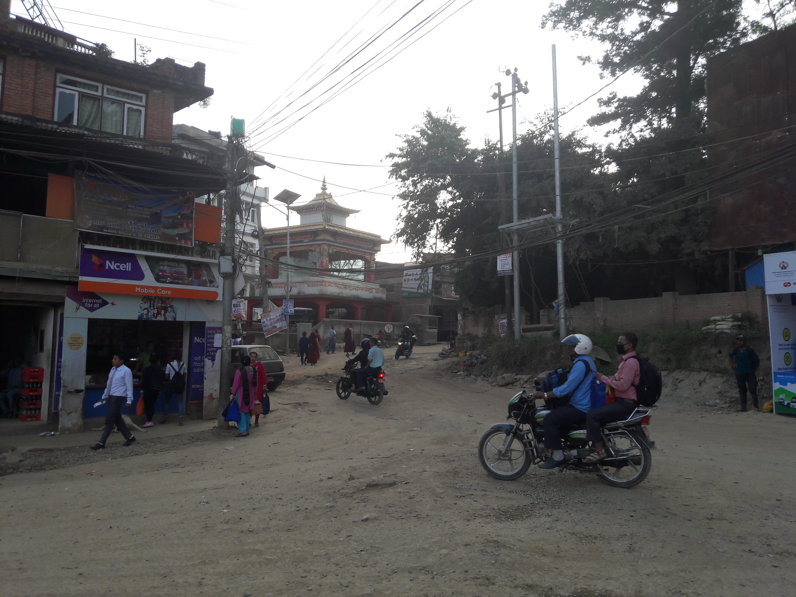

Pharping to Champadevi
This walk takes you along a ridge to a temple perched on the highest of the hills surrounding Kathmandu
This walk takes you along a ridge to a temple perched on the highest of the hills surrounding Kathmandu
There are buses from Kathmandu Ratna Park and other major bus stops but if you're starting in Patan, it's easier to pick it up on the way. From the ring road, turn down Dakshinkali road and walk around 100 metres. There will be lots of buses pulling in, calling out their destinations and encouraging you to join them! Make sure you ask for Pharping (sounds like Parping) or, if that gets blank looks, Dakshinkali. Lots of the buses are heading to other places but one for Pharping will show up eventually, just be persistent
Make sure the ticket inspector tells you when you arrive at Pharping, the bus should stop at a junction with a football pitch on one side (see picture). The road bends around to the left, past the pitch. You should be off the bus by now and you want to go towards a small temple instead of following the main road.
